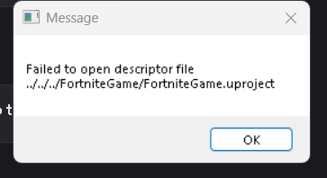

BUILDExample error supplied for the Aeris guide.
Failed to Find Descriptor File
If you see “Failed to open descriptor file”, your Fortnite build files are not being loaded correctly.
Possible Causes
- PAK files were not loaded
- Missing Aftermath library
- Incomplete 14.40 installation
How To Fix
Step 1
If you do not see the custom Aeris loading screen, your PAK files may not have loaded.
Step 2
Download GFSDK_Aftermath_Lib.x64.dll.
Step 3
Place it in 14.40/Engine/Binaries/ThirdParty/NVIDIA/NVaftermath/Win64.
Step 4
Launch Aeris again. If the descriptor error remains, reinstall 14.40.
